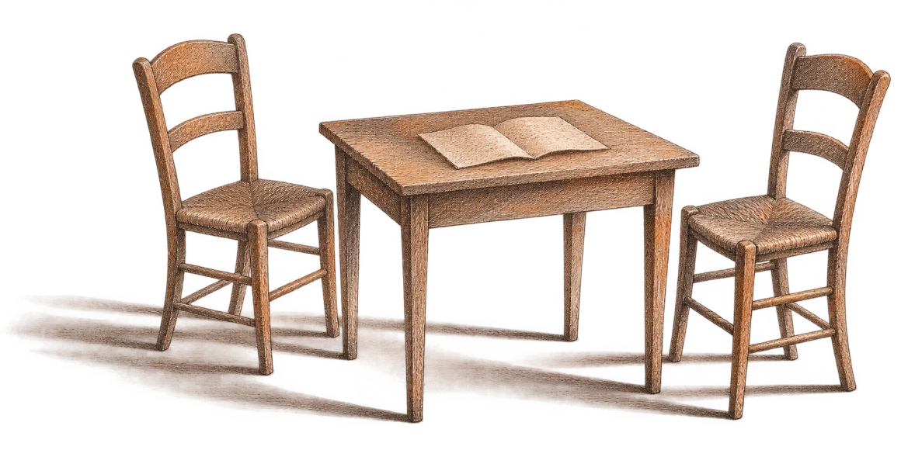

The other chair
Six notes for one player, twice.

Plucked string
Hold and release the button or the space bar six times. Take as long as you like on each note.
Note 1 of 6
Six notes for one player, twice.

Hold and release the button or the space bar six times. Take as long as you like on each note.